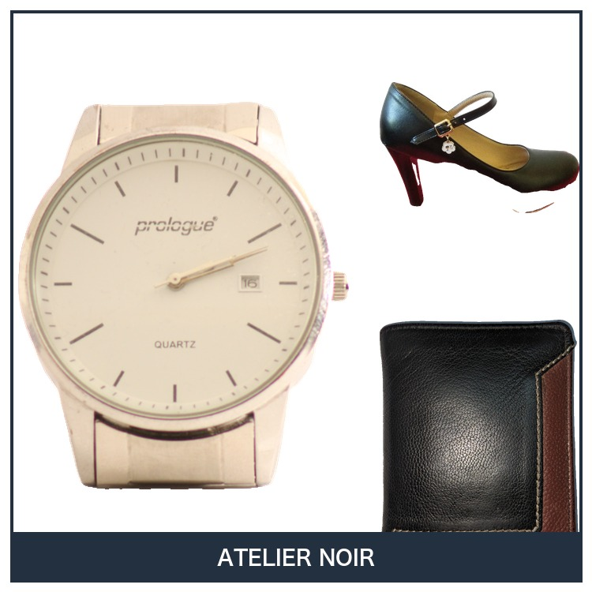
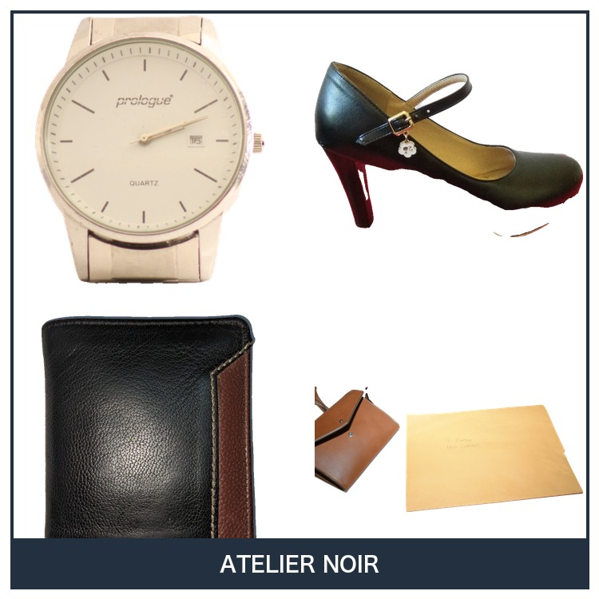

商品写真をまとめて、出品に使いやすい正方形画像へ整えます。 複数枚の配置、余白、フレームをそろえる簡易レイアウト機能です。
複数の写真をまとめて配置し、余白とフレームを整えて書き出します。下は実際に本ツールで作った出品画像です。


※サンプル商品で生成。
4枚の写真を正方形の中にきれいに並べます。
商品が詰まりすぎないよう、余白と見え方を整えます。
用意した枠を重ねて、画像全体の統一感を出します。
出品に使いやすい正方形画像として保存します。
画像取得や自動出品とつなげると、出品前の細かい整形作業を減らせます。